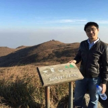

General
I am an associate professor in
ThingsLAB in
Institute of Computing Technology,
Chinese Academy of Sciences. I got my Ph.D in
Department of Electrical and Electronic Engineering
at
The University of Hong Kong, in 2016,
advised by
Prof. Hayden Kwok-Hay So, and
Prof. Ngai Wong.
Education
- Ph.D. in Computer Engineering, The University of Hong Kong, 2011-2016
- M.Eng. in Electronic Engineering, Harbin Institute of Technology, 2007-2009
- B.Eng. in Electronic Engineering, Harbin Institute of Technology, 2003-2007